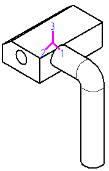

Define a custom center of mass or coordinate system for drawings
You can add custom graphics to represent a center of mass or a coordinate system by adding them as blocks to your draft document or draft template. You can specify that whenever the model center of mass or coordinate system is shown in a drawing view, it is displayed using the custom block graphics.
-
Open a new a draft document and do the following:
-
Create a block containing the center of mass or coordinate system graphics.
-
Save and close the draft file containing the block graphics.
-
-
Open your draft template or drawing where you want to show a center of mass or coordinate system, and then do the following:
-
From the Library tab, drag the file containing the block graphics onto the sheet. Select the block occurrence on the sheet and press the Delete key.
-
Open the Solid Edge Options dialog box.
-
On the Annotation tab, under Center of Mass and Coordinate System Block, do one of the following:
-
In the Center of Mass box or in the Coordinate System box, type the name of the block that you created, for example Block1.
If you have different views of the same block, type the block view name using the format Block1:BlockView1.
-
If you do not know the name of the block, click the Change button next to the text box to display the Select Block dialog box. You can see graphical previews of all blocks in the active document.
Select the name of the block, and then click OK to apply it.
-
-
Save and close the document.
Tip:-
You can locate a center of mass or coordinate system block in a different document using the Browse button in the Select Block dialog box. When you select it and click OK, it is copied into your working document. In this case, you do not have to drag a block from the Library, as described in step 2a.
-
The custom graphics are displayed the next time you create a drawing view and set the center of mass or coordinate system to be shown using the Display tab in the Drawing View Properties dialog box. For more information, see Display a coordinate system or center of mass in a drawing view.
The following example shows a custom coordinate system block.

-
How do I
Create a blockDisplay a coordinate system or center of mass in a drawing view
Learn more
Displaying the center of mass or coordinate system on a drawingLook up more details
Select Block dialog boxDrawing View Display Defaults dialog box
Edge Display tab (Solid Edge Options dialog box)
Annotation tab (Solid Edge Options dialog box)